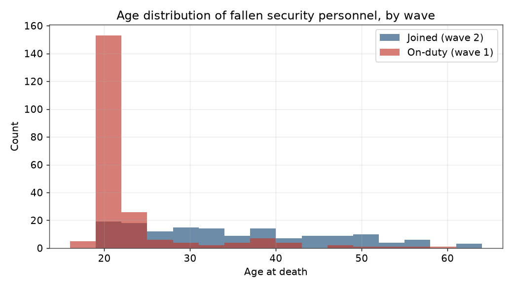
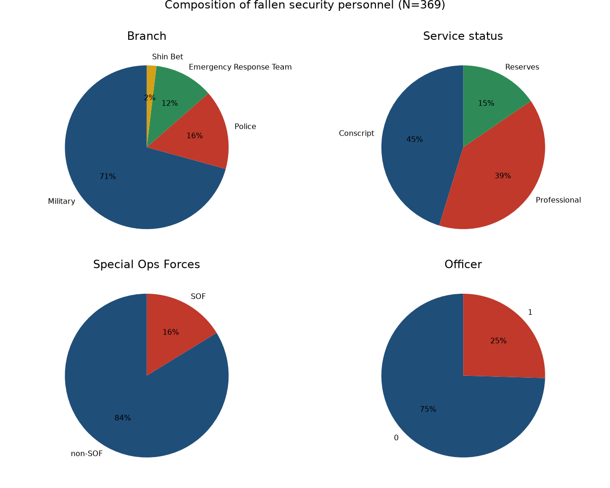
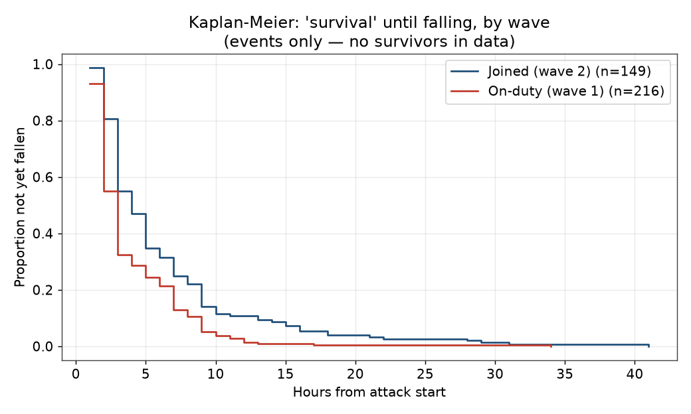
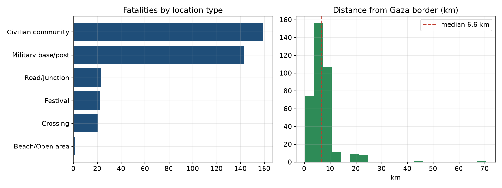

לאחר השלב הראשון של המתקפה, בו לחמו הכוחות שהיו מוצבים בגבול, הופיעו בשטח יחידות ולוחמים נוספים שנכנסו לקרבות ביוזמתם — בהיעדר גורם שניהל את האירוע. בקרב המגיבים קיים ייצוג דיספרופורציונלי ללוחמי יחידות מיוחדות. אנו טוענים שההצלחה החלקית של כוחות הביטחון נבעה מ“קיבולת תגובה מוטמעת”: היכולת לעבור באופן מיידי משגרה למשבר ולפעול בערפל קרב, גם כשמערכות הפיקוד והשליטה משותקות.
האנימציה מציגה את הופעת הנופלים, שעה אחר שעה, על מפת עוטף עזה. לאינטראקציה מלאה ראו המפה החיה למטה. · ⬇ הורדת הווידאו (webm)
כל עיגול מציין מיקום נפילה; גודלו פרופורציוני למספר הנופלים בו. הזיזו את המחוון או לחצו “הפעל” כדי לראות כיצד התפשטה הלחימה במרחב, שעה אחר שעה מתחילת המתקפה (06:29).




המאגר נאסף ממקורות פתוחים רשמיים (צה“ל, משטרה, כאן, Mapping the Massacre) ואומת בהצלבה. הגיל אותר ממקורות פתוחים (בעיקר הספדי Times of Israel) באימות שני מקורות (367/369). המרחק מהגבול והיררכיית היחידה חושבו מהנתונים. הניתוח כולל χ²/Fisher, רגרסיה לוגיסטית (Firth), Kruskal‑Wallis, Kaplan‑Meier ו‑Cox, וטיעון חסם ליחב“מ. גרסה מוקדמת של רשומת הנופלים (182 חיילים, מעמוד חללי “חרבות ברזל” הממשלתי, אוקטובר 2024) שמורה בתיקיית Evolving‑Paradigms שבמאגר.